rm(list = ls())
library(networkdata)
library(sna) #network analysis
library(network) #network objects
library(degreenet) #degree distribution modeling
library(knitr)
set.seed(123)In the previous tutorial, we explored the mathematical foundations of network statistics, learning about degree, centrality, diameter, and more. Now it’s time to get our hands dirty with R code! This tutorial will show you how to compute all these measures using real network data.

This tutorial covers five major topics using real-world data:
- Centrality Measures: Identifying important nodes across biological, social, and political networks
- Connectivity Analysis: Understanding network robustness using Renaissance Florence
- Degree Distributions: Modeling connectivity patterns in protein interaction networks
- Component Analysis: Finding connected groups in large biological networks
- Temporal Networks: Analyzing how Cold War alliances evolved over time
By the end, you’ll have a complete toolkit for analyzing networks in any domain!
We’ll use the exact same datasets with SNA Part1, so you can directly compare how different statistics reveal different aspects of network structure. By the end, you’ll be able to conduct a complete network analysis on your own data!
1. Centrality Analysis Across Three Networks
In this section, we’ll analyze three networks to see how centrality varies by context:
- Dataset 1: Protein-Protein Interaction (PPI) Network
- Dataset 2: Add Health 9 Friendship Network
- Dataset 3: Highland Tribes Network
data(butland_ppi)
data(addhealth9)
data(tribes)
#process addHealth: boys only, largest component
inds <- which(addhealth9$X[, "female"] == 0)
myedges <- (addhealth9$E[, 1] %in% inds) * (addhealth9$E[, 2] %in% inds) == 1
myedges <- addhealth9$E[myedges, ]
tmp <- component.largest(as.network(myedges[, c(1:2)], directed = FALSE),
result = "graph")
addh9 <- as.network(tmp, directed = FALSE)
#process PPI:extract largest component
bppi <- as.network(component.largest(as.network(butland_ppi, directed = FALSE),
result = "graph"),
directed = FALSE)
#process tribes: positive relationships only
tribe <- as.network(component.largest(as.network(tribes[, , "pos"], directed = FALSE),
result = "graph"),
directed = FALSE)
cat("Network Sizes:\n")Network Sizes:cat("PPI:", network.size(bppi), "proteins,", network.edgecount(bppi), "interactions\n")PPI: 230 proteins, 695 interactionscat("Add Health 9:", network.size(addh9), "students,", network.edgecount(addh9), "friendships\n")Add Health 9: 118 students, 273 friendshipscat("Tribes:", network.size(tribe), "tribes,", network.edgecount(tribe), "alliances\n")Tribes: 12 tribes, 23 alliances1.1 Eigenvector Centrality: Quality Over Quantity
You’re important if you’re connected to other important nodes. It’s not just how many connections you have, but who you’re connected to.
Node-level eigenvector centrality and distribution:
#compute eigenvector centrality
ev_ppi <- evcent(bppi, gmode = "graph")
ev_addh9 <- evcent(addh9, gmode = "graph")
ev_tribe <- evcent(tribe, gmode = "graph")
#summary statistics
ev_summary <- data.frame(
Network = c("PPI", "Add Health 9", "Tribes"),
Min = c(min(ev_ppi), min(ev_addh9), min(ev_tribe)),
Q1 = c(quantile(ev_ppi, 0.25), quantile(ev_addh9, 0.25), quantile(ev_tribe, 0.25)),
Median = c(median(ev_ppi), median(ev_addh9), median(ev_tribe)),
Mean = c(mean(ev_ppi), mean(ev_addh9), mean(ev_tribe)),
Q3 = c(quantile(ev_ppi, 0.75), quantile(ev_addh9, 0.75), quantile(ev_tribe, 0.75)),
Max = c(max(ev_ppi), max(ev_addh9), max(ev_tribe)),
SD = c(sd(ev_ppi), sd(ev_addh9), sd(ev_tribe))
)
kable(ev_summary, digits = 4, caption = "Eigenvector Centrality: Summary Statistics")| Network | Min | Q1 | Median | Mean | Q3 | Max | SD |
|---|---|---|---|---|---|---|---|
| PPI | 0.0000 | 0.0008 | 0.0069 | 0.0354 | 0.0508 | 0.2672 | 0.0558 |
| Add Health 9 | 0.0001 | 0.0099 | 0.0287 | 0.0583 | 0.0744 | 0.3584 | 0.0716 |
| Tribes | 0.0420 | 0.1085 | 0.2390 | 0.2436 | 0.3716 | 0.4585 | 0.1617 |
#visualize distributions
par(mfrow = c(1, 3))
hist(ev_ppi, main = "PPI Network", xlab = "Eigenvector Centrality",
col = "lightblue", breaks = 20)
hist(ev_addh9, main = "Add Health 9 Network", xlab = "Eigenvector Centrality",
col = "lightcoral", breaks = 20)
hist(ev_tribe, main = "Tribes Network", xlab = "Eigenvector Centrality",
col = "lightgreen", breaks = 20)
Network-level ev centralization:
ev_central_ppi <- centralization(bppi, evcent, mode = "graph")
ev_central_addh9 <- centralization(addh9, evcent, mode = "graph")
ev_central_tribe <- centralization(tribe, evcent, mode = "graph")
cat("Eigenvector Centralization:\n")Eigenvector Centralization:cat("PPI:", round(ev_central_ppi, 3))PPI: 0.331cat("Add Health 9:", round(ev_central_addh9, 3))Add Health 9: 0.432cat("Tribes:", round(ev_central_tribe, 3))Tribes: 0.365Box plot of evcent and degree:
par(mfrow = c(2, 2))
boxplot(sna::evcent(bppi, gmode="graph")~degree(bppi, gmode="graph"),
xlab="Degree",
ylab="Eigenvalue Centrality",
main="Butland PPI",
col="lightblue")
boxplot(sna::evcent(addh9, gmode="graph")~degree(addh9, gmode="graph"),
xlab="Degree",
ylab="Eigenvalue Centrality",
main="Add Health 9",
col="lightcoral")
boxplot(sna::evcent(tribe, gmode="graph")~degree(tribe, gmode="graph"),
xlab="Degree",
ylab="Eigenvalue Centrality",
main="Tribes",
col="lightgreen")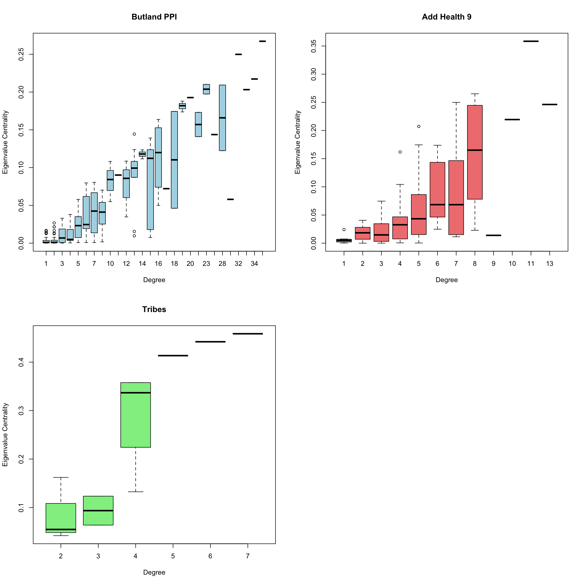
1.2 Closeness Centrality: Efficiency in Reaching Others
How quickly can you reach everyone else? High closeness means short paths to all other nodes—efficient for spreading information.
close_ppi <- closeness(bppi, gmode = "graph")
close_addh9 <- closeness(addh9, gmode = "graph")
close_tribe <- closeness(tribe, gmode = "graph")
close_summary <- data.frame(
Network = c("PPI", "Add Health 9", "Tribes"),
Min = c(min(close_ppi), min(close_addh9), min(close_tribe)),
Median = c(median(close_ppi), median(close_addh9), median(close_tribe)),
Mean = c(mean(close_ppi), mean(close_addh9), mean(close_tribe)),
Max = c(max(close_ppi), max(close_addh9), max(close_tribe)),
SD = c(sd(close_ppi), sd(close_addh9), sd(close_tribe))
)
kable(close_summary, digits = 4, caption = "Closeness Centrality: Summary Statistics")| Network | Min | Median | Mean | Max | SD |
|---|---|---|---|---|---|
| PPI | 0.1363 | 0.2756 | 0.2744 | 0.4053 | 0.0507 |
| Add Health 9 | 0.1263 | 0.2254 | 0.2241 | 0.3063 | 0.0386 |
| Tribes | 0.3929 | 0.5238 | 0.5161 | 0.7333 | 0.0977 |
par(mfrow = c(1, 3))
hist(close_ppi, main = "PPI", xlab = "Closeness", col = "lightblue", breaks = 20)
hist(close_addh9, main = "Add Health 9", xlab = "Closeness", col = "lightcoral", breaks = 20)
hist(close_tribe, main = "Tribes", xlab = "Closeness", col = "lightgreen", breaks = 20)
close_central_ppi <- centralization(bppi, closeness, mode = "graph")
close_central_addh9 <- centralization(addh9, closeness, mode = "graph")
close_central_tribe <- centralization(tribe, closeness, mode = "graph")
cat("PPI:", round(close_central_ppi, 3), "\n")PPI: 0.263 cat("Add Health 9:", round(close_central_addh9, 3), "→ Very distributed (cohesive friendships)\n")Add Health 9: 0.166 → Very distributed (cohesive friendships)cat("Tribes:", round(close_central_tribe, 3), "→ Clear geographic/political positioning\n")Tribes: 0.498 → Clear geographic/political positioningBox plot of closeness and degree:
par(mfrow = c(2, 2))
boxplot(sna::closeness(bppi, gmode="graph")~degree(bppi, gmode="graph"),
xlab="Degree",
ylab="Closeness Centrality",
main="Butland PPI",
col="lightblue")
boxplot(sna::closeness(addh9, gmode="graph")~degree(addh9, gmode="graph"),
xlab="Degree",
ylab="Closeness Centrality",
main="Add Health 9",
col="lightcoral")
boxplot(sna::closeness(tribe, gmode="graph")~degree(tribe, gmode="graph"),
xlab="Degree",
ylab="Closeness Centrality",
main="Tribes",
col="lightgreen")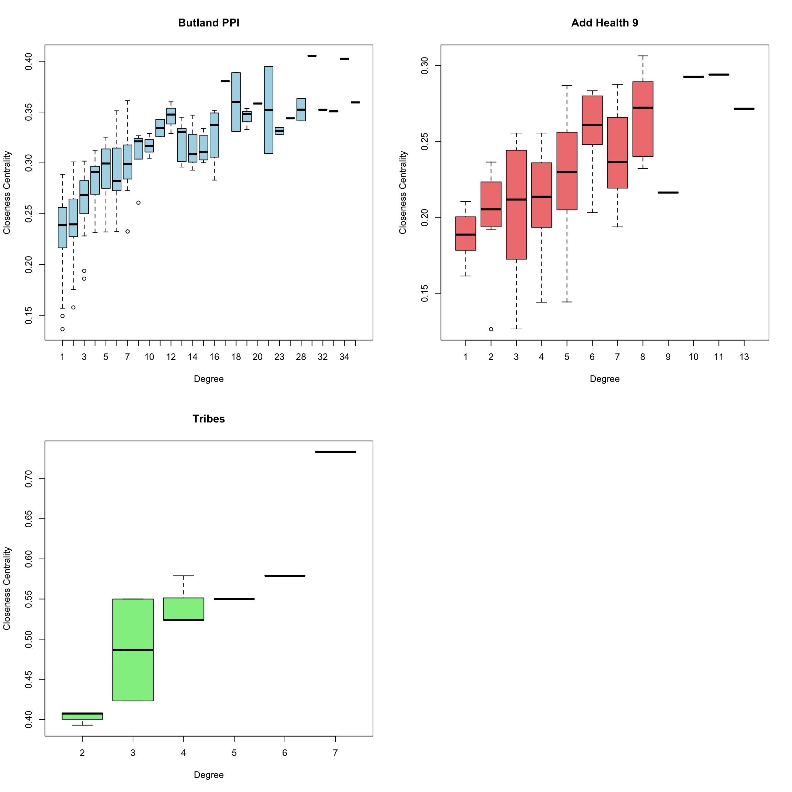
1.3 Betweenness Centrality: Bridges and Brokers
How often do you lie on shortest paths between others? High betweenness means you’re a bridge connecting different parts of the network.
btw_ppi <- betweenness(bppi, gmode = "graph")
btw_addh9 <- betweenness(addh9, gmode = "graph")
btw_tribe <- betweenness(tribe, gmode = "graph")
btw_summary <- data.frame(
Network = c("PPI", "Add Health 9", "Tribes"),
Min = c(min(btw_ppi), min(btw_addh9), min(btw_tribe)),
Median = c(median(btw_ppi), median(btw_addh9), median(btw_tribe)),
Mean = c(mean(btw_ppi), mean(btw_addh9), mean(btw_tribe)),
Max = c(max(btw_ppi), max(btw_addh9), max(btw_tribe)),
SD = c(sd(btw_ppi), sd(btw_addh9), sd(btw_tribe))
)
kable(btw_summary, digits = 2, caption = "Betweenness Centrality: Summary Statistics")| Network | Min | Median | Mean | Max | SD |
|---|---|---|---|---|---|
| PPI | 0 | 7.09 | 318.81 | 8334.84 | 785.55 |
| Add Health 9 | 0 | 92.37 | 211.32 | 1669.50 | 293.78 |
| Tribes | 0 | 1.00 | 5.50 | 31.00 | 9.28 |
par(mfrow = c(1, 3))
hist(btw_ppi, main = "PPI", xlab = "Betweenness", col = "lightblue", breaks = 30)
hist(btw_addh9, main = "Add Health 9", xlab = "Betweenness", col = "lightcoral", breaks = 30)
hist(btw_tribe, main = "Tribes", xlab = "Betweenness", col = "lightgreen", breaks = 30)
btw_central_ppi <- centralization(bppi, betweenness, mode = "graph")
btw_central_addh9 <- centralization(addh9, betweenness, mode = "graph")
btw_central_tribe <- centralization(tribe, betweenness, mode = "graph")
cat("PPI:", round(btw_central_ppi, 3), "\n")PPI: 0.308 cat("Add Health 9:", round(btw_central_addh9, 3), "\n")Add Health 9: 0.217 cat("Tribes:", round(btw_central_tribe, 3), "→ Critical bridge tribes\n")Tribes: 0.506 → Critical bridge tribesBox plot of betweenness and degree:
par(mfrow = c(2, 2))
boxplot(sna::betweenness(bppi, gmode="graph")~degree(bppi, gmode="graph"),
xlab="Degree",
ylab="Betweenness Centrality",
main="Butland PPI",
col="lightblue")
boxplot(sna::betweenness(addh9, gmode="graph")~degree(addh9, gmode="graph"),
xlab="Degree",
ylab="Betweenness Centrality",
main="Add Health 9",
col="lightcoral")
boxplot(sna::betweenness(tribe, gmode="graph")~degree(tribe, gmode="graph"),
xlab="Degree",
ylab="Betweenness Centrality",
main="Tribes",
col="lightgreen")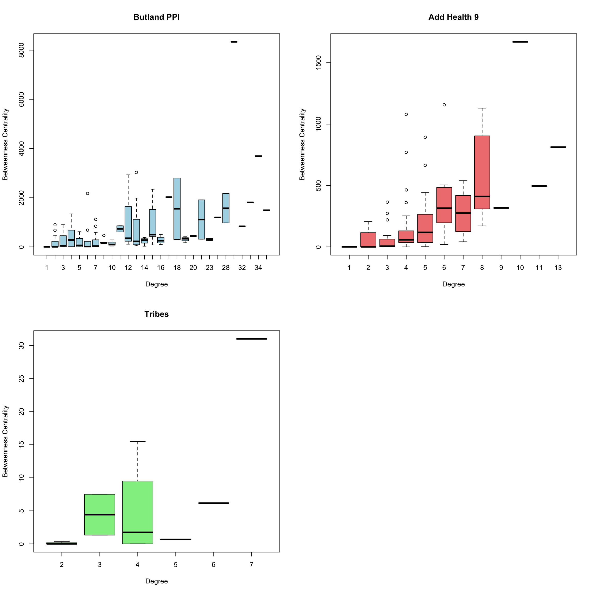
Note
Betweenness is usually right-skewed. Most nodes have near-zero betweenness (they’re not on many shortest paths), while a few “broker” nodes have extremely high values.
1.4 Degree Centrality: The Simple Count
Don’t forget the basics! Degree just counts direct connections. Often the most interpretable measure.
deg_ppi <- degree(bppi, gmode = "graph")
deg_addh9 <- degree(addh9, gmode = "graph")
deg_tribe <- degree(tribe, gmode = "graph")
degree_summary <- data.frame(
Network = c("PPI", "Add Health 9", "Tribes"),
Min = c(min(deg_ppi), min(deg_addh9), min(deg_tribe)),
Median = c(median(deg_ppi), median(deg_addh9), median(deg_tribe)),
Mean = c(mean(deg_ppi), mean(deg_addh9), mean(deg_tribe)),
Max = c(max(deg_ppi), max(deg_addh9), max(deg_tribe))
)
kable(degree_summary, digits = 2, caption = "Degree: Summary Statistics")| Network | Min | Median | Mean | Max |
|---|---|---|---|---|
| PPI | 1 | 3 | 6.04 | 36 |
| Add Health 9 | 1 | 4 | 4.63 | 13 |
| Tribes | 2 | 4 | 3.83 | 7 |
par(mfrow = c(1, 3))
hist(deg_ppi, main = "PPI", xlab = "Degree", col = "lightblue", breaks = 20)
hist(deg_addh9, main = "Add Health 9", xlab = "Degree", col = "lightcoral", breaks = 20)
hist(deg_tribe, main = "Tribes", xlab = "Degree", col = "lightgreen", breaks = 10)
deg_central_ppi <- centralization(bppi, degree, mode = "graph")
deg_central_addh9 <- centralization(addh9, degree, mode = "graph")
deg_central_tribe <- centralization(tribe, degree, mode = "graph")1.5 Comparing All Four Centrality Measures
Do different centrality measures agree? Let’s check correlations:
#PPI network correlations
cent_ppi <- cbind(Degree = deg_ppi, Eigenvector = ev_ppi,
Closeness = close_ppi, Betweenness = btw_ppi)
cor_ppi <- cor(cent_ppi)
kable(cor_ppi, digits = 3, caption = "Centrality Correlations: PPI Network")| Degree | Eigenvector | Closeness | Betweenness | |
|---|---|---|---|---|
| Degree | 1.000 | 0.891 | 0.717 | 0.578 |
| Eigenvector | 0.891 | 1.000 | 0.662 | 0.258 |
| Closeness | 0.717 | 0.662 | 1.000 | 0.492 |
| Betweenness | 0.578 | 0.258 | 0.492 | 1.000 |
#Add Health 9 correlations
cent_addh9 <- cbind(Degree = deg_addh9, Eigenvector = ev_addh9,
Closeness = close_addh9, Betweenness = btw_addh9)
cor_addh9 <- cor(cent_addh9)
kable(cor_addh9, digits = 3, caption = "Centrality Correlations: Add Health 9 Network")| Degree | Eigenvector | Closeness | Betweenness | |
|---|---|---|---|---|
| Degree | 1.000 | 0.648 | 0.572 | 0.582 |
| Eigenvector | 0.648 | 1.000 | 0.729 | 0.401 |
| Closeness | 0.572 | 0.729 | 1.000 | 0.556 |
| Betweenness | 0.582 | 0.401 | 0.556 | 1.000 |
#Tribes correlations
cent_tribe <- cbind(Degree = deg_tribe, Eigenvector = ev_tribe,
Closeness = close_tribe, Betweenness = btw_tribe)
cor_tribe <- cor(cent_tribe)
kable(cor_tribe, digits = 3, caption = "Centrality Correlations: Tribes Network")| Degree | Eigenvector | Closeness | Betweenness | |
|---|---|---|---|---|
| Degree | 1.000 | 0.870 | 0.910 | 0.664 |
| Eigenvector | 0.870 | 1.000 | 0.721 | 0.322 |
| Closeness | 0.910 | 0.721 | 1.000 | 0.826 |
| Betweenness | 0.664 | 0.322 | 0.826 | 1.000 |
Summary: network centralization comparison
centralization_df <- data.frame(
Network = c("PPI", "Add Health 9", "Tribes"),
Degree = c(deg_central_ppi, deg_central_addh9, deg_central_tribe),
Closeness = c(close_central_ppi, close_central_addh9, close_central_tribe),
Betweenness = c(btw_central_ppi, btw_central_addh9, btw_central_tribe),
Eigenvector = c(ev_central_ppi, ev_central_addh9, ev_central_tribe)
)
kable(centralization_df, digits = 3,
caption = "Network Centralization: Comprehensive Comparison")| Network | Degree | Closeness | Betweenness | Eigenvector |
|---|---|---|---|---|
| PPI | 0.132 | 0.263 | 0.308 | 0.331 |
| Add Health 9 | 0.073 | 0.166 | 0.217 | 0.432 |
| Tribes | 0.345 | 0.498 | 0.506 | 0.365 |
library(corrplot)
tmp <- cbind(deg=degree(bppi, gmode="graph"),
eigen=sna::evcent(bppi, gmode="graph"),
close=closeness(bppi, gmode="graph"),
between=betweenness(bppi, gmode="graph"))
pairs(tmp,main="Butland PPI",col="lightblue",pch=20)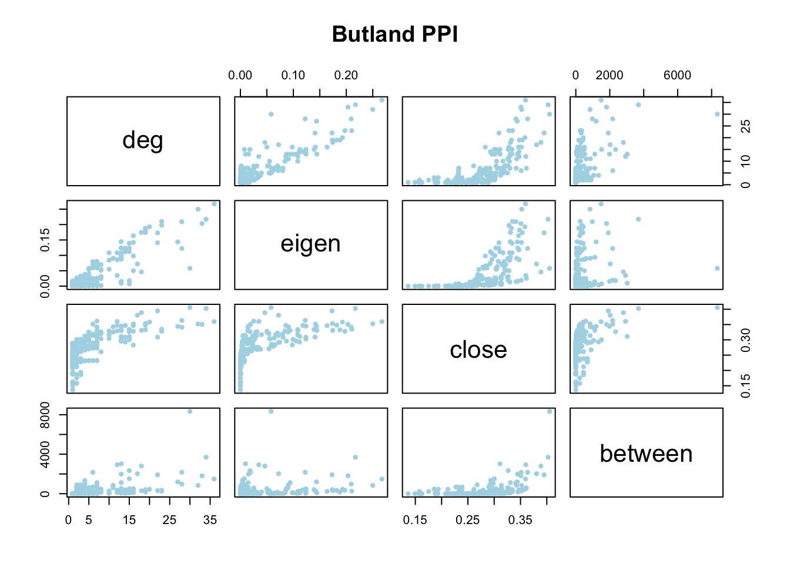
corrplot(cor(tmp))
title(main="Butland PPI", cex=1, line = 0)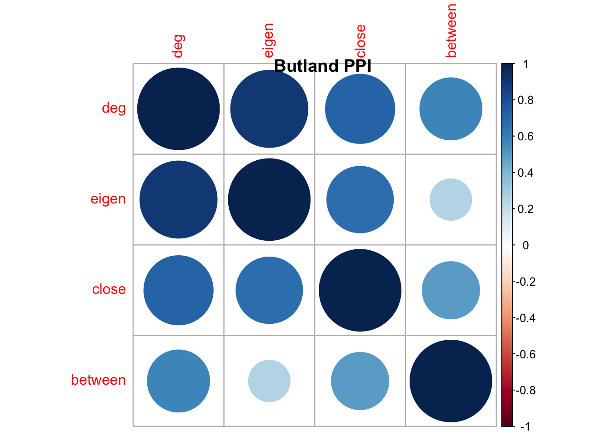
tmp <- cbind(deg=degree(addh9, gmode="graph"),
eigen=sna::evcent(addh9, gmode="graph"),
close=closeness(addh9, gmode="graph"),
between=betweenness(addh9, gmode="graph"))
pairs(tmp,main="Add Health 9",col="lightcoral",pch=20)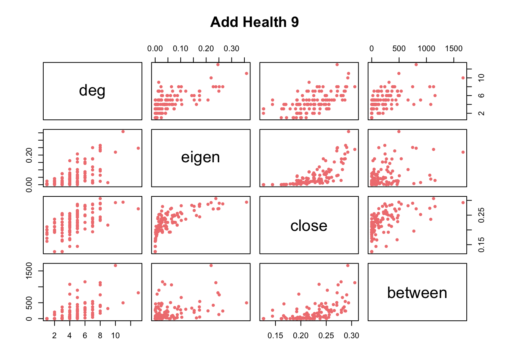
corrplot(cor(tmp), is.corr = TRUE)
title(main="Add Health 9", cex=1, line = 0)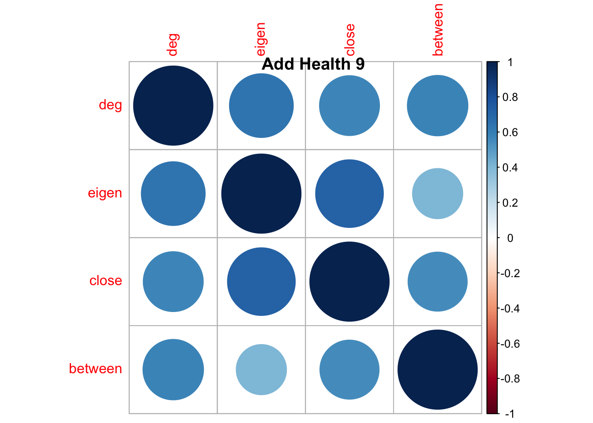
tmp <- cbind(deg=degree(tribe, gmode="graph"),
eigen=sna::evcent(tribe, gmode="graph"),
close=closeness(tribe, gmode="graph"),
between=betweenness(tribe, gmode="graph"))
pairs(tmp,main="Tribes",col="lightgreen",pch=20)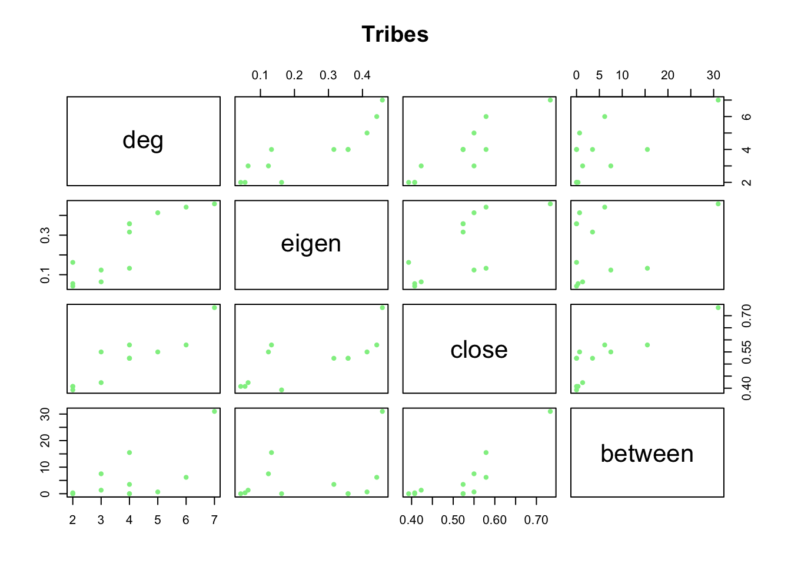
corrplot(cor(tmp))
title(main="Tribes", cex=1, line = 0)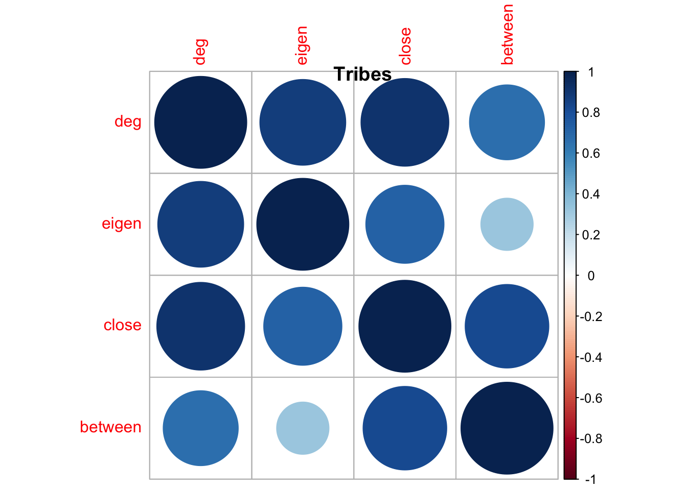
Important
Each quantity measures different aspects of the network. Degree, the simplest centrality measure, is just a count of alters. One can be connected to many alters. But, those alters may not be highly connected themselves. This would imply a low eigenvalue centrality - the best one dimensional approximation of the adjacency matrix. A node that is connected to few alters can high closeness if their alters are connected to many others via short paths. Finally, betweenness captures the extent to which nodes resides on geodesics connecting other nodes. A node could have eigenvalue centrality by virtue of being connected to “central” nodes, but if the nodes does not reside on geodesics, her betweenness will be low relative to other nodes. Clearly, the various measures are correlated, but all capture slightly different formulations of what it means to be central in a network.
- Degree & Eigenvector often correlate highly (popular nodes tend to know popular people)
- Betweenness often correlates weakly with other kinds of centrality (bridges aren’t always hubs)
- Closeness depends on overall network structure
- Always compute multiple measures, each reveals different aspects of importance.
2. Connectivity & Robustness Analysis
Let’s shift to Renaissance Florence (the Florentine Marriage Network) to study network connectivity. How robust is a network to node removal?
data(florentine)
flo_lc <- as.network(component.largest(flomarriage, result = "graph"),
directed = FALSE)
network.vertex.names(flo_lc) [1] "Acciaiuoli" "Albizzi" "Barbadori" "Bischeri" "Castellani"
[6] "Ginori" "Guadagni" "Lamberteschi" "Medici" "Pazzi"
[11] "Peruzzi" "Ridolfi" "Salviati" "Strozzi" "Tornabuoni" 2.1 Finding cutpoints: critical nodes
A cutpoint (or articulation point) is a node whose removal disconnects the network. These are structurally critical positions.
cutpoints_indicator <- cutpoints(flo_lc, mode = "graph", return.indicator = TRUE)
cutpoint_families <- network.vertex.names(flo_lc)[which(cutpoints_indicator == 1)]
cat("Cutpoint families (critical bridges):\n")Cutpoint families (critical bridges):print(cutpoint_families)[1] "Albizzi" "Guadagni" "Medici" "Salviati"cat("\nNumber of cutpoints:", length(cutpoint_families), "\n")
Number of cutpoints: 4 plot(flo_lc,
vertex.col = ifelse(cutpoints_indicator == 1, "red", "lightblue"),
vertex.cex = 2,
displaylabels = TRUE,
label.cex = 0.8,
main = "Florentine Marriage Network\n(Cutpoints in Red)")
Tip
Cutpoint families are structural bridges. Their removal would fragment the network:
- Removing a cutpoint increases the number of components
- These families have unique structural importance beyond degree or centrality
- In alliance networks, cutpoints are vulnerable attack targets
The Florentine network has 4 cutpoints, showing moderate robustness.
2.2 Vertex Connectivity vs Edge Connectivity
The density of a network can be used as a measure of connectivity.
For vertex-connectivity and edge-connectivity, we can use the number of nodes needed to disconnect the graph and the number edges one needs to remove to disconnect the graph, respectively. The minimal sets of vertices are computed below using the min_separators function.
Vertex connectivity (κ): Minimum number of nodes to remove to disconnect the network
Edge connectivity (λ): Minimum number of edges to remove to disconnect the network
For Florentine marriages:
- Vertex connectivity = 1 (because cutpoints exist—removing one node disconnects it, such as Pazzi)
- Edge connectivity = 1 (because cutpoints exist—removing one edge disconnects it, such as the line between Albizzi and Ginori)
library(igraph)
library(intergraph)
network.density(flo_lc)[1] 0.1904762edge_connectivity(asIgraph(flo_lc))[1] 1vertex_connectivity(asIgraph(flo_lc))[1] 1tmp <- min_separators(asIgraph(flo_lc))
print(as.numeric(tmp)) # 2-"Albizzi", 7-Guadagni", 9-"Medici", 13-"Salviati".[1] 2 7 9 13print(min_cut(asIgraph(flo_lc),value.only=F)$cut)+ 1/20 edge from 3ce7eb5:
[1] 10--13
Note
Application Importance:
- Social networks: Cutpoints are key brokers; losing them fragments communities
- Infrastructure: Cutpoints are failure points in transportation/communication networks
- Organizational networks: Cutpoints identify critical personnel for knowledge transfer
3. Degree Distribution and Degree Distribution Modeling
The Yeast Protein Interaction Network. Now let’s analyze a large biological network to understand degree distributions, the pattern of connectivity across nodes.
yeast_data <- read.table("CCSB-Y2H.txt",
header = FALSE, sep = "\t", stringsAsFactors = FALSE)
yeast_edgelist <- yeast_data[, 1:2]
#check self-loops
sum(yeast_edgelist[,1] == yeast_edgelist[,2]) #total have 168 self-loops
#remove self-loops
yeast_edgelist_clean <- yeast_edgelist[yeast_edgelist[, 1] != yeast_edgelist[, 2], ]
cat("Original edges:", nrow(yeast_edgelist), "\n")
cat("Edges after removing self-loops:", nrow(yeast_edgelist_clean), "\n")3.1 Creating directed network and computing degrees
#create directed network
yeast_edgelist_clean <- butland_ppi
yeast_net <- network(yeast_edgelist_clean, matrix.type = "edgelist", directed = TRUE)
# Compute degree sequences
out_deg <- apply(yeast_net[,], 1, sum)
table(out_deg)out_deg
0 1 2 3 4 5 6 7 8 9 10 11 12
25 118 34 17 18 20 5 12 10 3 3 4 1 in_deg <- apply(yeast_net[,], 2, sum)
table(in_deg)in_deg
0 1 2 3 4 5 6 7 8 9 10 11 12 13 14 15 18 19 21 26
145 45 17 15 8 4 4 4 3 2 1 3 3 1 2 2 1 1 1 2
28 29 30 31 32 36
1 1 1 1 1 1 total_deg <- out_deg + in_deg
table(total_deg)total_deg
1 2 3 4 5 6 7 8 10 11 12 13 14 15 16 17 18 19 20 22
105 39 19 13 16 10 14 6 3 2 3 9 3 5 4 1 2 3 1 2
23 27 28 30 32 33 34 36
2 1 2 1 1 1 1 1 # Check correlation
cor_in_out <- cor(in_deg, out_deg)
cat("Correlation between in-degree and out-degree:", round(cor_in_out, 3), "\n")Correlation between in-degree and out-degree: 0.116 # Visualize degree distributions
par(mfrow = c(1, 3))
hist(out_deg, breaks = 30, main = "Out-Degree Distribution",
xlab = "Out-Degree", col = "lightblue", cex.main = 1.5)
hist(in_deg, breaks = 30, main = "In-Degree Distribution",
xlab = "In-Degree", col = "lightgreen", cex.main = 1.5)
hist(total_deg, breaks = 30, main = "Total Degree Distribution",
xlab = "Total Degree", col = "lightcoral", cex.main = 1.5)
3.2 Fitting degree distribution models
Many biological networks show heavy-tailed degree distributions (a few “hub” proteins with many connections). Let’s test different statistical models:
#fit various degree distribution models
#note: These require the degreenet package
#1.Discrete Pareto/Zipf (power law)
dpml_fit <- adpmle(total_deg, cutoff = 1)
dpml_fit$theta PDF MLE
1.655074 #2.Yule distribution
yule_fit <- ayulemle(total_deg, cutoff = 1)
yule_fit$theta PDF MLE
1.795801 #3.Waring distribution
waring_fit <- awarmle(total_deg, cutoff = 1)
waring_fit$theta Waring PDF MLE Waring prob. new
2.4359238 0.1340216 #4.Poisson distribution
pois_fit <- apoimle(total_deg, cutoff = 1)
pois_fit$theta mean
4.303704 #5.Conway-Maxwell-Poisson
cmp_fit <- acmpmle(total_deg, cutoff = 1)
cmp_fit$thetaCMP mean CMP s.d.
181031.9 NaN
Common Degree Distributions in Real Networks
- Power law (Zipf/Yule): “Scale-free” networks. Common in biological, social, and technological networks. A few hubs dominate.
- Poisson: Random networks. Most nodes have similar degree around the mean.
- Waring: Overdispersed. More variability than Poisson.
- CMP: Flexible—can be overdispersed or underdispersed.
Protein interaction networks typically show power-law-like distributions.
3.3 How can we compare the fits of the different models?
We can use the lldpall(), etc, functions to compute the corrected AIC and the BIC for the models.
dpml_results <- lldpall(v = dpml_fit$theta, x = total_deg, cutoff = 1)
yule_results <- llyuleall(v = yule_fit$theta, x = total_deg, cutoff = 1)
war_results <- llwarall(v = waring_fit$theta, x = total_deg, cutoff = 1)
poi_results <- llpoiall(v = pois_fit$theta, x = total_deg, cutoff = 1)
model_comparison <- data.frame(
Model = c("Discrete Pareto/Zipf", "Yule", "Waring", "Poisson"),
Parameters = c(dpml_results[1], yule_results[1], war_results[1], poi_results[1]),
Log_Likelihood = c(dpml_results[2], yule_results[2], war_results[2], poi_results[2]),
AICC = c(dpml_results[3], yule_results[3], war_results[3], poi_results[3]),
BIC = c(dpml_results[4], yule_results[4], war_results[4], poi_results[4])
)
kable(model_comparison, digits = 2,
col.names = c("Model", "Parameters", "Log-Likelihood", "AIC", "BIC"),
caption = "Degree Distribution Model Comparison")| Model | Parameters | Log-Likelihood | AIC | BIC |
|---|---|---|---|---|
| Discrete Pareto/Zipf | 2 | -677.35 | 1358.75 | 1365.90 |
| Yule | 2 | -670.68 | 1345.41 | 1352.57 |
| Waring | 3 | -661.54 | 1329.18 | 1339.88 |
| Poisson | 2 | -1383.14 | 2770.32 | 2777.47 |
4. Component Analysis
4.1 Finding giant components in large networks
When networks are large and potentially fragmented, component analysis is crucial. Let’s analyze the undirected yeast network:
yeast_net_undirected <- network(yeast_edgelist_clean,
matrix.type = "edgelist",
directed = FALSE)
cat("Network size:", network.size(yeast_net_undirected), "proteins\n")Network size: 270 proteinscat("Number of edges:", network.edgecount(yeast_net_undirected), "interactions\n\n")Number of edges: 716 interactionscomp_dist <- component.dist(yeast_net_undirected)
sorted_sizes <- sort(comp_dist$csize, decreasing = TRUE)
cat("Number of components:", length(comp_dist$csize), "\n")Number of components: 20 cat("Largest component size:", sorted_sizes[1], "proteins\n")Largest component size: 230 proteinscat("Second largest:", sorted_sizes[2], "proteins\n")Second largest: 3 proteinscat("Component sizes:", head(sorted_sizes, 10), "\n")Component sizes: 230 3 3 2 2 2 2 2 2 2 4.2 Does It Have a Giant Component?
A giant component is one that contains a substantial fraction of all nodes (typically >50%).
n_total <- network.size(yeast_net_undirected)
largest_size <- max(comp_dist$csize)
proportion_in_largest <- largest_size / n_total
cat("Proportion in largest component:", round(proportion_in_largest, 3), "\n")Proportion in largest component: 0.852 if (proportion_in_largest > 0.5) {
cat("YES - This network has a GIANT COMPONENT!\n")
cat("Interpretation: Most proteins are interconnected in one large interaction network.\n")
} else {
cat("NO giant component - network is highly fragmented.\n")
}YES - This network has a GIANT COMPONENT!
Interpretation: Most proteins are interconnected in one large interaction network.4.4 Visualizing the yeast network and largest component
yeast_net.weak <- (yeast_net[,] == 1 | t(yeast_net[,]) == 1)
yeast_net.weak <- network(yeast_net.weak,directed=FALSE)
plot(yeast_net.weak,
vertex.col = "lightblue",
edge.col = rgb(0.5, 0.5, 0.5, 0.2),
displayisolates=FALSE)
cdist <- component.dist(yeast_net.weak)
plot(yeast_net.weak,vertex.cex=1*(cdist$membership==1),
vertex.col = "lightblue",
edge.col = rgb(0.5, 0.5, 0.5, 0.2))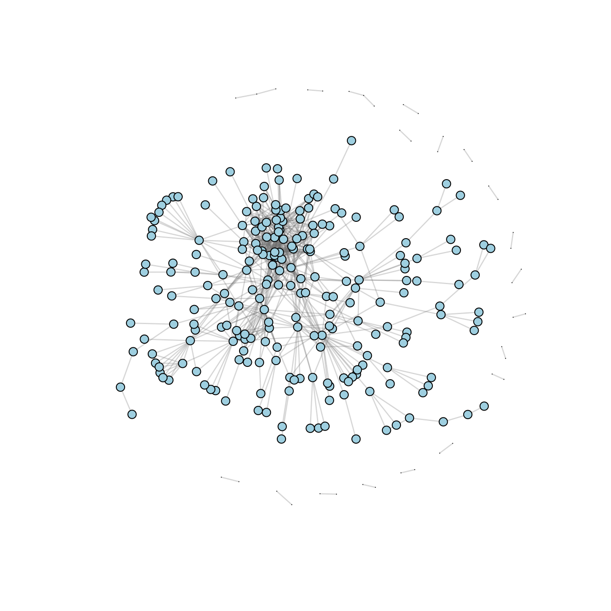
str(cdist)List of 3
$ membership: int [1:270] 1 1 1 1 1 1 1 1 1 1 ...
$ csize : int [1:20] 230 3 3 2 2 2 2 2 2 2 ...
$ cdist : num [1:270] 0 17 2 0 0 0 0 0 0 0 ...#cdist$membership
#largest component plot
ccsb1 <- network(as.sociomatrix(yeast_net.weak)[cdist$membership==1,cdist$membership==1],
vertex.col = "lightblue",directed=FALSE)
plot(ccsb1,displayisolates=FALSE, vertex.col = "lightblue")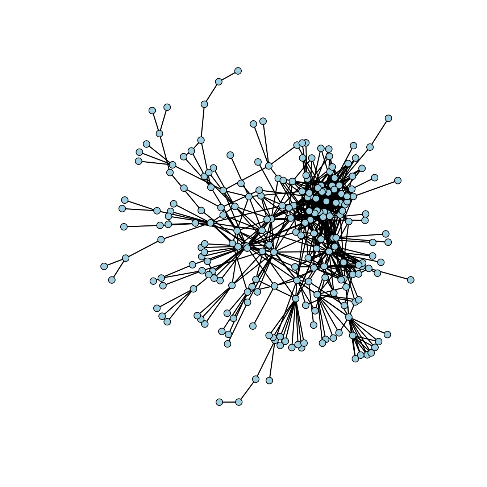
4.5 Geodesic Distance Analysis
For the full network, let’s analyze geodesic distances (shortest paths):
There are 45 isolates in the undirected network.
gdist = geodist(yeast_net.weak)
table(gdist$gdist)
0 1 2 3 4 5 6 7 8 9 10 11 Inf
270 1432 7214 13886 16716 8276 3334 1372 394 72 18 2 19914 table(cdist$membership)
1 2 3 4 5 6 7 8 9 10 11 12 13 14 15 16 17 18 19 20
230 3 3 2 2 2 2 2 2 2 2 2 2 2 2 2 2 2 2 2 mean(gdist$gdist[!is.infinite(gdist$gdist)])[1] 3.76273#the number of isolates
sum(apply(yeast_net.weak[,],1,sum)==0)[1] 0
Note
- Proportion reachable: Shows how connected the network is overall
- Mean geodesic distance: Average “degrees of separation” in the network
- Distribution shape: Tells us if distances are uniform or if some pairs are very far apart
Small-world networks have short average distances despite large size!
5. Temporal Network Analysis - Cold War Dynamics
So far, we’ve analyzed static networks—single snapshots. But many real networks evolve! Let’s analyze Cold War cooperation networks from 1950-1985.
Load the Cold War dataset.
data(coldwar)
#This is a 3D array: 66 countries × 66 countries × 8 time periods
cc_array <- coldwar$cc #cooperation and conflict network
countries <- dimnames(coldwar$cc)[[1]]
years <- dimnames(coldwar$cc)[[3]]
cat("Dataset structure:\n")Dataset structure:cat("Countries:", length(countries), "\n")Countries: 66 cat("Time periods:", length(years), "\n")Time periods: 8 cat("Years:", years, "\n")Years: 1950 1955 1960 1965 1970 1975 1980 1985 5.1 Analyzing components across time
For each year, let’s identify the two largest alliance blocs:
net <- apply(coldwar$cc, c(1,2), sum)
net <- network(net > 0)
plot(net, displaylabels = TRUE)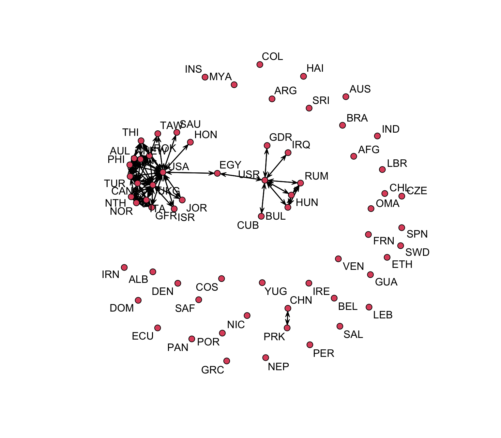
Here is some basic code to view the time-dependent components using sna:
year <- 1950
for(i in 1:8){
net <- network(ifelse(coldwar$cc[, , i] > 0, coldwar$cc[, , i], 0))
cd <- component.dist(net)
c1 <- order(cd$csize, decreasing = TRUE)[1]
c2 <- order(cd$csize, decreasing = TRUE)[2]
print(year)
print(row.names(coldwar$cc[, , 1])[which(cd$membership == c1)])
print(row.names(coldwar$cc[, , 1])[which(cd$membership == c2)])
year <- year + 5
}[1] 1950
[1] "AUL" "CAN" "NEW" "PHI" "ROK" "TUR" "UKG" "USA"
[1] "BUL" "HUN" "RUM" "USR"
[1] 1955
[1] "ROK" "TAW" "USA"
[1] "AFG"
[1] 1960
[1] "NOR" "ROK" "TUR" "USA"
[1] "CUB" "USR"
[1] 1965
[1] "AUL" "NEW" "ROK" "THI" "UKG" "USA"
[1] "AFG"
[1] 1970
[1] "AUL" "ISR" "JOR" "NEW" "PHI" "ROK" "THI" "UKG" "USA"
[1] "EGY" "IRQ" "USR"
[1] 1975
[1] "ROK" "USA"
[1] "AFG"
[1] 1980
[1] "CAN" "GFR" "ITA" "NOR" "NTH" "ROK" "UKG" "USA"
[1] "ISR" "JOR"
[1] 1985
[1] "EGY" "GFR" "HON" "ROK" "SAU" "UKG" "USA"
[1] "GDR" "USR"
Note
Looking at these patterns, we can see: the two largest connected components are usually made up of the USA and its allies in one component, with the USSR and its allies in the other component.
- Largest components consistently center around the US and key allies (UK, Australia, Canada, South Korea)
- Component sizes fluctuate dramatically—from 2 countries (1975) to 9 countries (1970)
- Second-largest components are strikingly small, occasionally including Soviet-aligned nations
- This fragmentation reflects Cold War bipolarity: distinct Western and Eastern blocs with limited cooperation
6. Summary: Key Functions Reference
Here’s a quick reference of all the key functions we’ve covered:
Basic Properties
| Function | Purpose | Example |
|---|---|---|
network.size() |
Number of nodes | network.size(nw) |
network.edgecount() |
Number of edges | network.edgecount(nw) |
is.directed() |
Check if directed | is.directed(nw) |
gden() |
Network density | gden(nw) |
Connectivity
| Function | Purpose | Example |
|---|---|---|
component.dist() |
Find components | component.dist(nw) |
get.inducedSubgraph() |
Extract subnetwork | get.inducedSubgraph(nw, v = nodes) |
cutpoints() |
Find articulation points | cutpoints(nw, mode = "graph") |
Distance Measures
| Function | Purpose | Example |
|---|---|---|
geodist() |
All pairwise distances | geodist(nw) |
| Distance matrix | Shortest path lengths | geodist(nw)$gdist |
Node-Level Centrality
| Function | Purpose | Example |
|---|---|---|
degree() |
Degree centrality | degree(nw, gmode = "graph") |
closeness() |
Closeness centrality | closeness(nw, gmode = "graph") |
betweenness() |
Betweenness centrality | betweenness(nw, gmode = "graph") |
evcent() |
Eigenvector centrality | evcent(nw, gmode = "graph") |
Network-Level Measures
| Function | Purpose | Example |
|---|---|---|
centralization() |
Network centralization | centralization(nw, degree, mode = "graph") |
max(eccentricity) |
Network diameter | max(apply(dist_matrix, 1, max)) |
Degree Distribution Modeling
| Function | Purpose | Example |
|---|---|---|
adpmle() |
Fit Zipf/Pareto | adpmle(degree_sequence) |
ayulemle() |
Fit Yule | ayulemle(degree_sequence) |
awarmle() |
Fit Waring | awarmle(degree_sequence) |
apoimle() |
Fit Poisson | apoimle(degree_sequence) |
acmpmle() |
Fit CMP | acmpmle(degree_sequence) |
Temporal Network Analysis
| Technique | Purpose | Code Pattern |
|---|---|---|
| Loop through time | Analyze each period | for(i in 1:n_periods) {...} |
| Track components | Monitor evolution | component.dist(net_t) |
| Aggregation | Combine over time | apply(array, c(1,2), sum) |
6.6 Important Arguments
gmode: For undirected networks usegmode = "graph", for directed usegmode = "digraph"cmode: For directed degree, usecmode = "indegree"orcmode = "outdegree"mode: Similar to gmode—usemode = "graph"for undirected networks- call
sna::degree(net2, gmode='graph')when package conflict